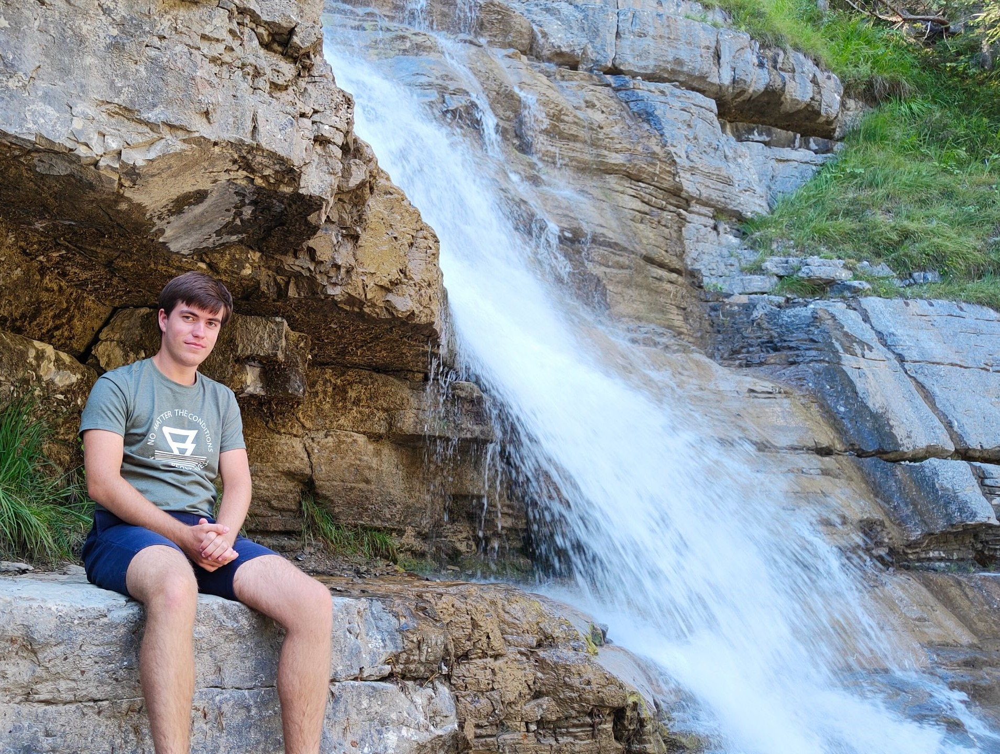

Wie ben ik?
Ik ben Cas van den Hoek, 18 jaar oud, wonende in Sint-Maartensdijk (op het Eiland Tholen), samen met mijn twee ouders en een broertje. Waarschijnlijk zal dit gedurende mijn studie ook zo blijven: ik acht de kans klein dat ik ooit toch nog op kamers ga. Qua vooropleiding had ik gekozen voor de havo, wat ik heb gevolgd op 't roncalli in Bergen op Zoom. Buiten schooltijd spreek ik graag af met maten van me om bij mooi weer naar het strand te gaan of een dagje uit te gaan, veelal in de vorm van een citytrip; in het geval het wat minder mooi weer is game ik graag. Ook ben ik liefhebber van bier: niet in de zin van dat ik mezelf graag dronken voer, maar wel in de zin van dat ik fan ben van met name speciaalbiertjes en het proberen van nieuwe varianten daarvan. Natuurlijk heb ik ook interesses op het gebied van ICT: anders zou ik hier natuurlijk niet voor de HBO-ICT opleiding hebben gekozen. Dit komt onder meer tot zijn recht in de vorm van dat ik veel weet over hoe een computersysteem fysiek in elkaar zit, al een aardige kennis heb op het gebied van Linux en zelfs Arch Linux heb weten te installeren en configureren op mijn desktop thuis en dat ik om kan gaan met verschillende hypervisors voor diverse virtuele machine beheerders (Hyper-V, QEMU via virt-manager, VMware en VirtualBox). Tot slot heb ik ook een bijbaantje: ik werk één tot twee avonden per weekend bij het Chinees-Indisch restaurant Nieuw Eiland Tholen in Scherpenisse.
Qua karakter denk ik dat de volgende eigenschappen bij mij passen:
- zelfstandig
- vooruitstrevend
- eigenwijs
- secuur
- behulpzaam
- beleefd
- gefocust